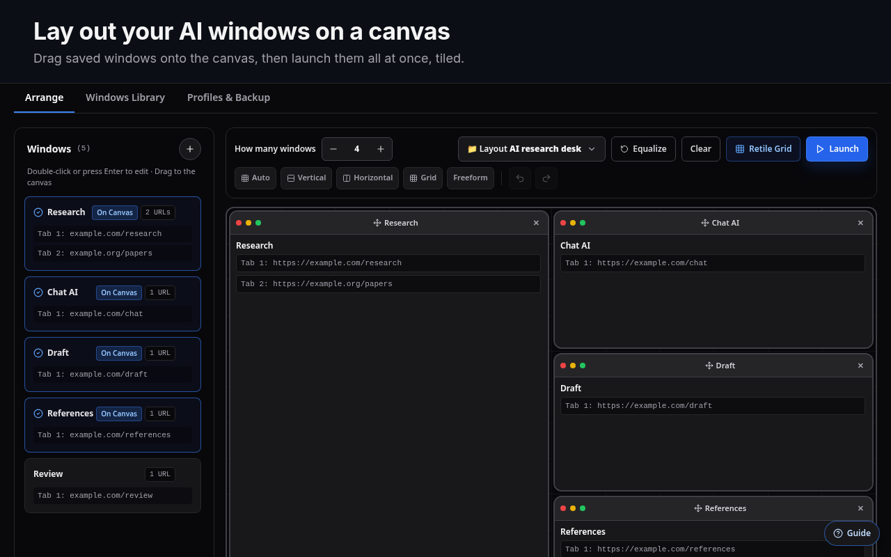
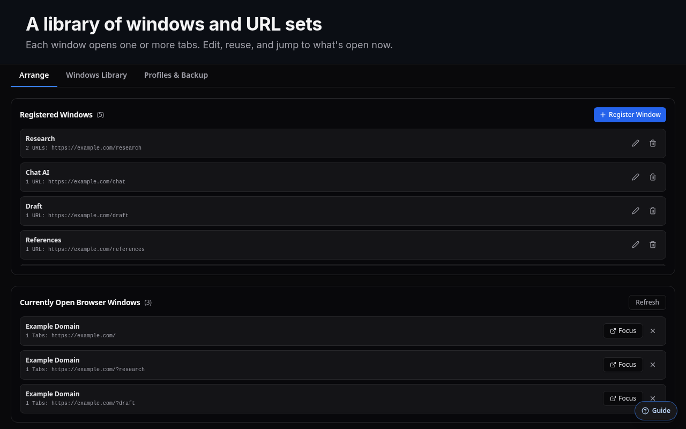
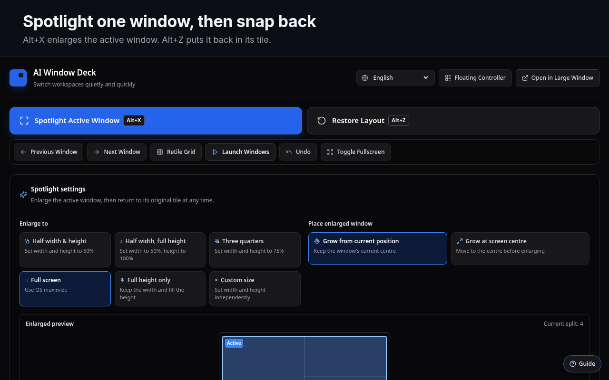
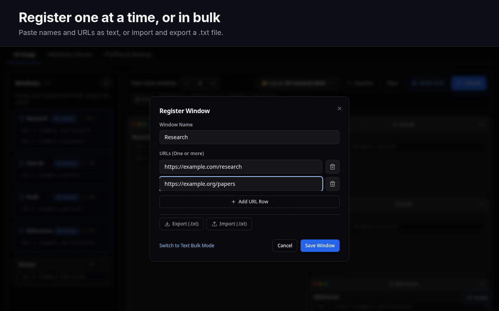
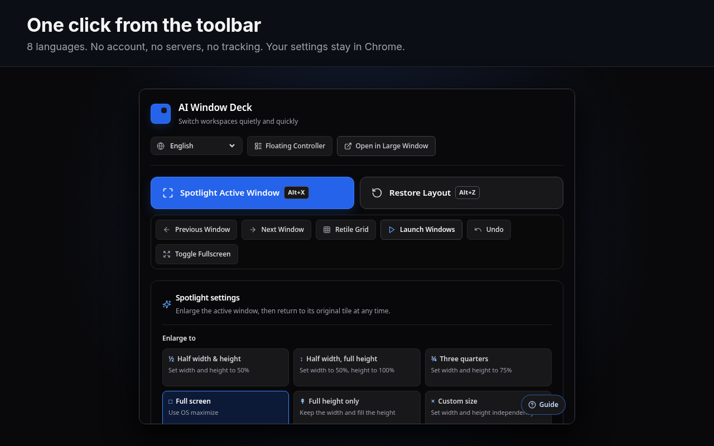

Window library
Each saved window has a name and one or more URLs, which open as tabs. Add them one by one, paste a list as text, or import a .txt file.
Window manager for Claude Code in the cloud and Codex — run multiple projects at once without getting confused.
Built for Claude Code in the cloud and Codex. Save the sites you use per project, lay them out on a canvas, open them as tiled Chrome windows, and spotlight one with a shortcut — so you can run Project A, B, and C at once without getting confused. Your profile and sign-ins stay as they are.

01What it is
For people who run Claude Code in the cloud, Codex, and other AI tools across several projects. AI Window Deck does not embed or proxy any site. It opens normal Chrome windows and puts them where you want them.
Each saved window has a name and one or more URLs, which open as tabs. Add them one by one, paste a list as text, or import a .txt file.
Drag windows onto a 12 × 12 grid and resize them from any edge. Start from Auto, Vertical, Horizontal, Grid or Focus, or place them freely. Keep several presets.
Alt+X enlarges the active window. Press it again, or Alt+Z, and the window goes back to its tile.


02How it works
Click the toolbar icon. On first run, a short guide marks where to start.
Under Select Target Display(s), pick the monitor or monitors the deck opens on.
Press + in the Windows sidebar. Give each window a name and one or more URLs.
Drag windows onto the canvas. Set how many you want, pick a layout, and resize tiles from their edges.
Each window opens as its own Chrome window, tiled to match the canvas, with its tabs grouped.
While you work, Alt+X brings the active window forward. Alt+A re-tiles the deck.

03Features
Everything works from the toolbar popup, a floating controller, or the keyboard.
One click opens every window in the layout. Retile moves windows you already launched back into place.
Choose which monitor, or which monitors, the deck opens on. Each display can briefly show its number, so you can tell them apart.
Spotlight, restore, retile and full screen out of the box. Assign next, previous, undo and focus 1–8 yourself.
Keep a compact controller open next to your work, or open the settings in a larger window of their own.
Save every window, layout and setting as a JSON file, and restore it on another machine.
English, 日本語, Deutsch, Español, Français, 한국어, Português (Brasil) and 简体中文. The panel follows the browser until you choose.

04Install
Install from the Chrome Web Store in one click, or load a release ZIP. Both take about a minute.
Live on the Chrome Web Store. One-click install, automatic updates.
AI-Window-Deck-vX.Y.Z.zip from Releases and unzip it.chrome://extensions and turn on Developer mode.git clone https://github.com/takaoumehara/ai-window-deck.git
cd ai-window-deck
npm install
npm run buildLoad the folder that contains manifest.json with Load unpacked. dist/ is committed, so a fresh clone also loads without building.
05Shortcuts
Chrome lets an extension suggest four default shortcuts. Assign or change any of them at chrome://extensions/shortcuts. The panel's Change shortcuts link opens that page.
| Command | Default |
|---|---|
| Spotlight: enlarge the active window / back to its tile | AltX |
| Put the window back in the tile it started from | AltZ |
| Arrange (re-tile) the deck windows | AltA |
| Full screen / back | AltQ |
| Undo the last arrangement | not set |
| Next window / previous window | not set |
| Focus window 1–8 | not set |
On macOS, Chrome shows Alt as ⌥.
06Privacy
No server, no account, no analytics. Your windows and layouts stay in your Chrome profile.
chrome.storage.sync, so Chrome can sync them between your own devices if Chrome Sync is on.chrome.storage.session and cleared when the browser session ends.| Permission | Why it is needed |
|---|---|
tabs | Open saved URLs as tabs, and read the titles and URLs of open windows to list and arrange them. |
tabGroups | Name and colour the tab group of each window the deck opens. |
storage | Save your windows, layouts and preferences. |
system.display | Read display sizes and positions, so windows are tiled on the right monitor. |
The full policy is in PRIVACY.md.
07FAQ
chrome://extensions/shortcuts.